CosmicRay Recorder · v2 基板
マニュアル
宇宙線検出器をパソコンにつないで、数える・記録する・解析するまでの使い方です。後半の付録には、ファイルの形式、検出器のコマンド、ピン配置、ファームウェアの書き込み方をまとめています。
01このアプリについて
CosmicRay Recorder は、SiPM（シリコン光電子増倍管）を使った宇宙線検出器のデータをブラウザで記録するアプリです。検出器から 1 イベントごとに届く行を受け取り、その場でグラフにし、パソコンのフォルダへ自動で保存します。インストールは要りません。
| ページ | できること |
|---|---|
記録（index.html） | 検出器とつなぐ、計数を見る、保存する、オシロスコープ、検出器の設定、サーバーへの送信 |
解析（plotter.html） | 保存した .dat / .csv を読み込んで、ヒストグラム・天頂角分布・エネルギー校正を行う。検出器は要りません |
| マニュアル（このページ） | 使い方と資料 |
v1 のページ（v1.html） | v1 の検出器の記録用。v1 の使い方は画面左の「注意事項・ヒント」を見てください |
パソコンの Chrome か Edge を使ってください。USB 接続（Web Serial）、Bluetooth 接続（Web Bluetooth）、フォルダへの自動保存（File System Access）は、Firefox と Safari では使えません。デモと解析のページはどのブラウザでも動きます。
このマニュアルの画面写真は、デモ（合成データ）で撮ったものです。数値は実際の測定ではありません。写真を押すと大きく開きます。
02ページの開き方
ページをどの方法で開いたかによって、使える機能が変わります。いちばん確実なのは http://localhost で開く方法です。
| 開き方 | USB | Bluetooth | http:// のサーバーへ送信 |
|---|---|---|---|
file://（ファイルをダブルクリック） | 使える | 使えない | Chrome の版によって変わる（事前に確認） |
http://localhost:ポート | 使える | 使える | 使える — おすすめ |
https://（Web サイトに置いたページ） | 使える | 使える | 使えない（混在コンテンツとして止められる） |
localhost で開くには、console フォルダで簡単なサーバーを動かして、ブラウザで http://localhost:8000/ を開きます。
# Python が入っていれば追加のインストールは要りません
cd arduino/v2/console
python -m http.server 800003機種を選ぶ
最初に開くと、検出器の機種を選ぶ画面が出ます。機種によってデータの形式が違うので、画面も別々です。手元の検出器とケースの形を見比べて選んでください。
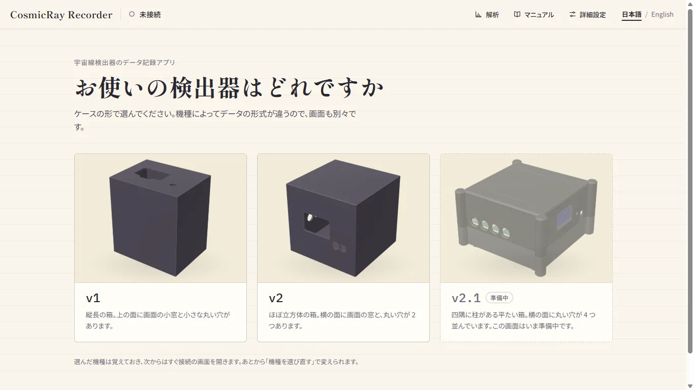

v1.html が開きます。

- 選んだ機種はブラウザが覚えています。次からは v2 ならすぐ接続の画面、v1 なら v1 のページが開きます。
- 選び直すときは、接続の画面の見出しの横にある 機種を選び直す（下の写真の 7）を押します。v1 のページではロゴの下にあります。
index.html?chooseを開いても選ぶ画面になります。
04つなぐ
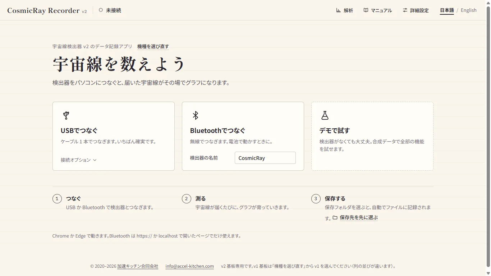
1 2 3 4 5 6 7- 1USBでつなぐ — ケーブルでつなぐ。いちばん確実
- 2接続オプション — ボーレート（ふつうは 9600）
- 3Bluetoothでつなぐ — 無線でつなぐ
- 4検出器の名前 — Bluetooth の一覧をこの名前で絞り込む
- 5デモで試す — 検出器なしで全部の機能を試せる
- 6保存先を先に選ぶ — つなぐ前に保存フォルダを決めておける
- 7機種を選び直す
USB でつなぐ
- 検出器を USB ケーブルでパソコンにつなぎます。
- USBでつなぐ を押し、ブラウザが出す一覧から検出器のポートを選んで 接続 を押します。
- 上の帯が 接続中 · USB になり、検出器の名前が出れば完了です。宇宙線が届くたびにグラフが伸びていきます。
検出器が書き込み待ち（ブートローダー）で止まっていたときは、自動で通常の起動に戻します。
Bluetooth でつなぐ
- 検出器の電源を入れます。
- 検出器の名前 に、検出器の Bluetooth の名前を入れます（最初は
CosmicRay）。名前で絞り込むので、教室に何台あっても自分の検出器だけが一覧に出ます。 - Bluetoothでつなぐ を押し、一覧から選んで ペア設定 を押します。
途中で切れたときは、自動でつなぎ直します。上の帯がコーラル色で点滅し、「◯ 秒後に ◯ 回目の再接続」と数えます。つながり直すと、自動保存は同じファイルに続けて書きます。やめるときは 切断 を押します。
デモで試す
検出器がなくても、合成データで全部の機能を試せます。右の欄で、宇宙線だけの 通常、線源を置いた 線源あり、空気シャワーが続く シャワー を選べ、頻度のつまみや バーストを起こす で動きを変えられます。デモのあいだは上に斜線の帯が出て、保存ファイルの名前に DEMO_ が付き、サーバーへは送れません。
05計測画面の見方
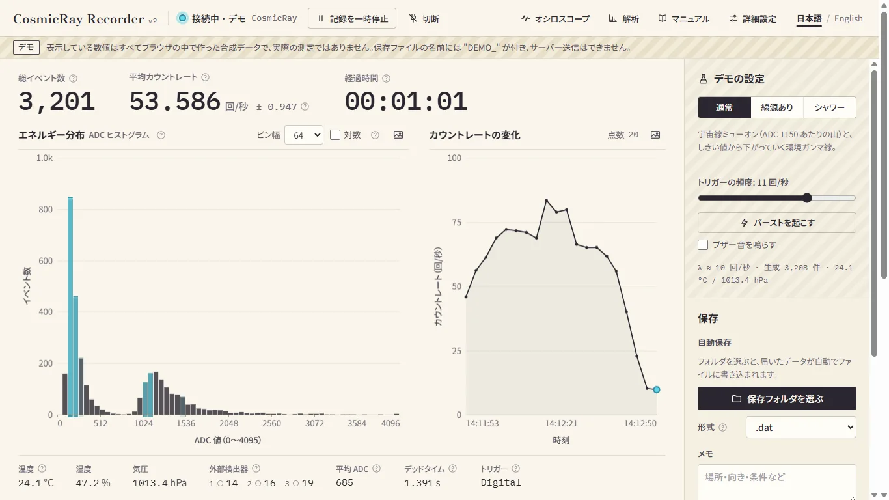
1 2 3 4 5 6 7 8 9 10 11 12いちばん上の数値
- 総イベント数 — 届いたイベントの数。
- 平均カウントレート — 1 秒あたりの数と、その統計誤差（±）。下の図のように、デッドタイムを差し引いたライブタイムで割っています。
- 経過時間 — 検出器の時計で測った時間。
グラフ
- エネルギー分布（ADC ヒストグラム）— 信号の大きさ（0〜4095）ごとの数。ビン幅 と 対数 を切り替えられます。地上の宇宙線（ミューオン）は ADC 1000 あたりに山を作り、低い側には環境のγ線が積み上がります。
- カウントレートの変化 — レートの推移。
どちらも右上の画像のボタンで PNG に保存できます。描き直す間隔は 詳細設定 > 表示 で 1 秒・3 秒・10 秒・手動から選べます。数値や項目の名前の横の ? を押すと、用語の説明が出ます。
記録の中身
下にスクロールすると、届いたデータそのものを見られます。
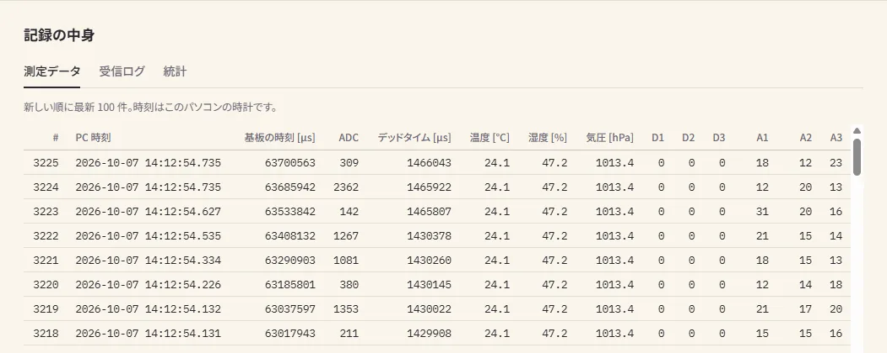
画面のメモリには最大 1,000,000 件まで残します。それを超えると古いものから空けて、警告を出します。長時間の測定では自動保存を使ってください。
06保存する
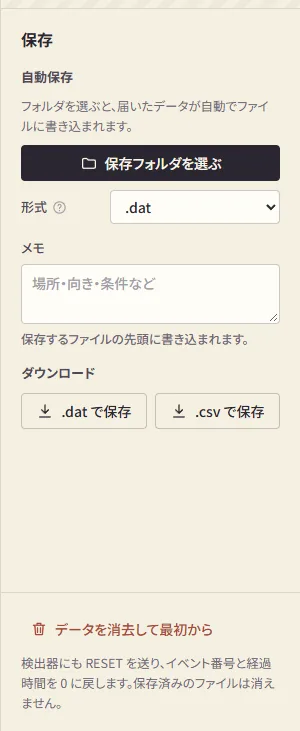
1 2 3 4 5計測画面の右の欄（狭い画面では右下の 保存 ボタン）にまとまっています。
- 1保存フォルダを選ぶ — ここから自動保存が始まる
- 2形式 —
.dat・.csv・両方 - 3メモ — 場所・向き・条件など。ファイルの先頭に
#付きで入る - 4ダウンロード — 画面にあるデータをまとめて 1 つのファイルに
- 5データを消去して最初から — 検出器にも
RESETを送り、番号と時間を 0 に。保存済みのファイルは消えない
自動保存（おすすめ）
- 保存フォルダを選ぶ を押して、保存先のフォルダを選びます。ブラウザが書き込みの許可を聞いてきたら ファイルの編集を許可 を選びます。
- 届いたデータが
<検出器の名前>_<日付>.datに書き足されていきます。日付が変わると新しいファイルになります。ファイルがとても大きくなったときは_02、_03… に分けます。 - 欄に、書き込み済みの件数と、まだ書き込んでいない件数が出ます。まだ書き込んでいないデータがあるときにタブを閉じようとすると、ブラウザが確認します。
ファイルの列の並びは 付録 A を見てください。
07オシロスコープ
上の帯の オシロスコープ を押すと、確認のあと画面が夜色になり、検出器から届く信号の波形（12 µs ごとに 1 点）を表示します。
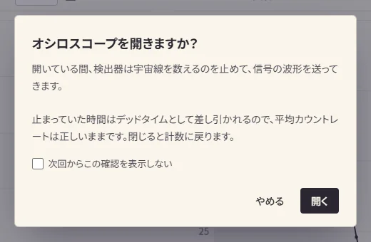
上の帯に「計数停止中 mm:ss」が出ます。止まっていた時間はデッドタイムに入るので、平均カウントレートは正しいままです。閉じて計数に戻る（または Esc）で戻ります。10 分間操作しないと自動で閉じて計数に戻ります。
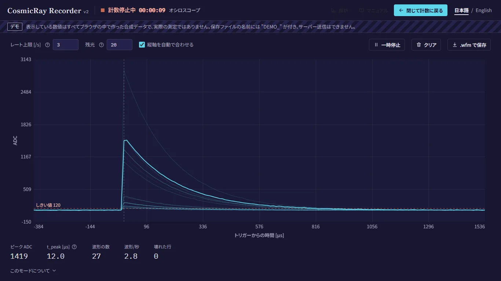
1 2 3 4 5 6 7 8 9- 1計数停止中 — 止まっている時間
- 2閉じて計数に戻る
- 3レート上限 — 1 秒に送る波形の数（1〜20）。Bluetooth では低めに
- 4残光 — 前の波形を薄く残す本数
- 5縦軸を自動で合わせる
- 6一時停止 / クリア
- 7.wfm で保存 — 表示中の波形をファイルに
- 8波形 — いちばん新しいものが明るい線。点線はしきい値で、線（右端のつまみ）をつかんで上下にドラッグすると、離したところが基板に設定されます。↑↓ キーでも動かせます（Shift で 10、PageUp / PageDown で 100）
- 9ピーク ADC・t_peak・波形の数・波形/秒・壊れた行
見えているのはアンプの生の信号ではなく、ピークホールド回路の出力です。立ち上がって頂点で止まり、ゆっくり下がってからリセットされる形になります（付録 C の図）。
08詳細設定
上の帯の 詳細設定 で右からパネルが開きます。上の目次で節に飛べます。基板の設定は検出器をつないでいるときだけ変えられます。「基板: …」の行は、検出器が今使っている値です。
トリガーとしきい値
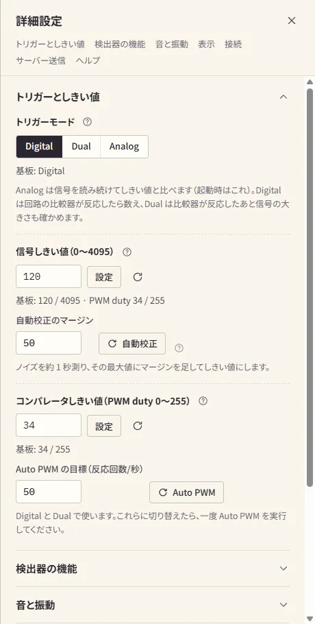
1 2 3 4 5- 1トリガーモード — Analog / Digital / Dual（下の図）
- 2信号しきい値（0〜4095）— Analog と Dual で使う
- 3自動校正 — ノイズを約 1 秒（100 回）測り、その最大値にマージン（初期値 50）を足してしきい値にする。光が入らない状態で
- 4コンパレータしきい値（PWM duty 0〜255）— Digital と Dual で使う
- 5Auto PWM — しきい値を掃引し、ノイズの反応が目標（回/秒）以下になるところに合わせる（約 8 秒）。Digital・Dual にしたら一度実行
検出器の機能・音と振動
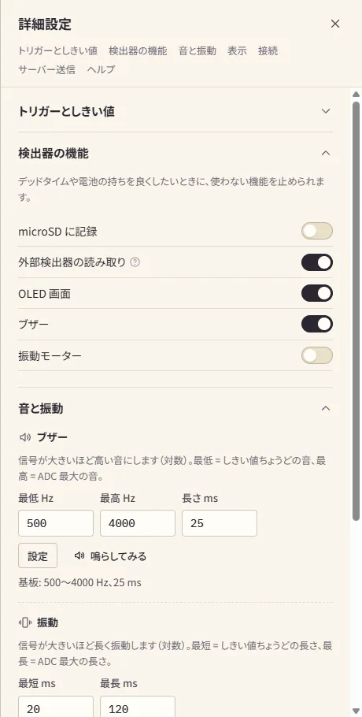
検出器の機能 — microSD への記録・外部検出器の読み取り・OLED 画面・ブザー・振動モーターを、それぞれスイッチでオン／オフできます。使わない機能を止めると、デッドタイムが減り電池が長持ちします。設定は検出器に保存され、次の起動でも残ります。
音と振動 — 信号が大きいほど高い音・長い振動になります（対数）。最低 / 最高の周波数、音の長さ、振動の最短 / 最長を設定し、鳴らしてみる / 振動させてみる で確かめられます。音は計数を妨げません。振動のテストのあいだ止まった時間はデッドタイムに入ります。
表示・接続
- グラフの更新間隔 — 1 秒 / 3 秒 / 10 秒 / 手動（今すぐ更新）。
- 接続先 — USB の VID:PID、Bluetooth の名前、基板のアドレス。どの基板につながっているかの確認に使います。
- Bluetooth の名前 — 英数字と記号で 1〜19 文字。名前を変えて再起動 で検出器に保存され、再起動後に新しい名前になります。教室で何台も使うときは、1 台ずつ別の名前にしておくと便利です。
09サーバーへの送信
詳細設定 > サーバー送信 から、測定イベントを観測サーバー（cosmicray-server）へリアルタイムに送れます。
送信の手順
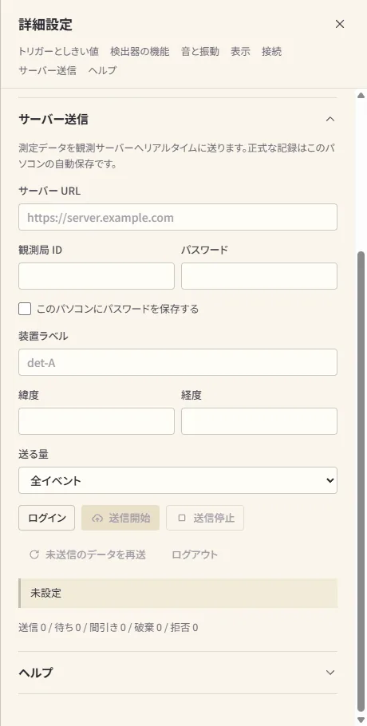
1 2 3 4 5 6- 1サーバー URL（例:
http://accel-kitchen.com:3000） - 2観測局 ID とパスワード — ID がサーバー上の保存先の名前になる。必要なら装置ラベル（1 か所に何台もあるときの区別）と緯度・経度も
- 3パスワードを保存 — 共用のパソコンでは使わない（下の注意）
- 4送る量 — 回線が細いときや計数率が高いときは減らす（自動保存は全件のまま）
- 5ログイン を押してから 送信開始
- 6状態 — 下の表。その下の行は
送信 / 待ち / 間引き / 破棄 / 拒否の件数
表示の見方
| 表示 | 意味 |
|---|---|
| 未設定 | URL / ID が空、またはログインしていない |
| ◯◯ でログイン中 — 送信は止まっています | ログイン済み。送信開始 を待っている |
| 送信中 — 送信済み N 件 / 待ち N 件 | 正常に送っている |
| N 秒後に再試行（M 回目） | 送信に失敗。1 → 2 → 4 … 最長 60 秒の間隔で、回数の制限なく再試行（データは保持） |
| 未送信 N 件 — 回線が追いつきません | 送信待ちがたまっている。送る量を減らす |
| オフライン | ネットワークが切れている。戻ると自動で再開 |
| 認証に失敗しました | もう一度ログインする |
送られる項目
今のサーバーの取り込み形式は CosmicWatch 用のため、湿度・気圧・外部検出器（Dig1〜3・Ana1〜3）は送られません（画面にも「旧 API モード」と出ます）。これらが必要なときは保存した .dat / .csv を使ってください。
| サーバーの項目 | この検出器の値 | 備考 |
|---|---|---|
event | Event（通し番号） | — |
timestamp | パソコンの時計 ＋ 検出器の µs 時計 | 間隔の精度は検出器の時計で保つ |
time | Time[us] | 起動からの経過 |
adc | ADC（0〜4095） | — |
vol | ADC から換算した電圧 [mV] | 計算値で、実測ではありません |
deadtime | Deadtime[us] ÷ 1000 | ms にして送る |
temp | Temp[C] | — |
パスワードの扱い
ブラウザの中に暗号化せずに保存されます。file:// で開いているときは、Chrome がすべてのローカル HTML ファイルで保存場所を共有するので、ほかのローカルのページからも読めてしまいます。
ふつうはパスワードを保存せず、タブを開いている間だけメモリに持っています（夜通しの測定中に認証が切れても、自動でログインし直せるように）。測定が終わったら ログアウト で消してください。サーバー URL が http:// のときは、パスワードとデータが暗号化されずに送られる旨の注意が出ます。
10解析（プロッター）
上の 解析 で開きます。保存したファイルを読み込むだけなので、検出器は要りません。v2 の .dat / .csv のほか、v1 のページで保存した .dat と、microSD のログ（LOG0001.TXT など）も読めます。ファイルはこのパソコンの中だけで読み、どこにも送りません。
ADC ヒストグラム
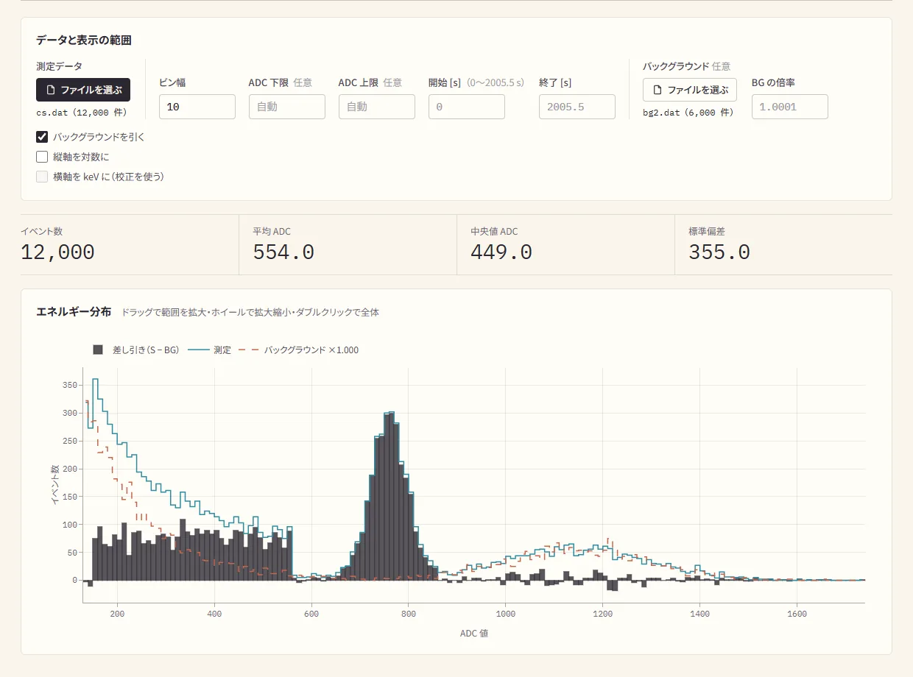
1 2 3 4 5 6 7- 1測定データのファイルを選ぶ
- 2ビン幅と、ADC の範囲（任意）
- 3時間の範囲 — 何秒目から何秒目までを使うか
- 4バックグラウンド — 線源なしで測ったファイル。倍率はライブタイムの比で自動（手で入れても良い）
- 5バックグラウンドを引く・対数・keV（keV は校正があるとき）
- 6イベント数・平均・中央値・標準偏差
- 7グラフ — 黒い棒が差し引いた結果、青い線が測定、赤い点線がバックグラウンド。ドラッグで拡大、ダブルクリックで戻る
天頂角分布
検出器を傾けて、真上（0°）から 15° ずつ向きを変えてカウントレートを測ると、宇宙線（ミューオン）が真上から多く、横からは少なく降ってくることを確かめられます。
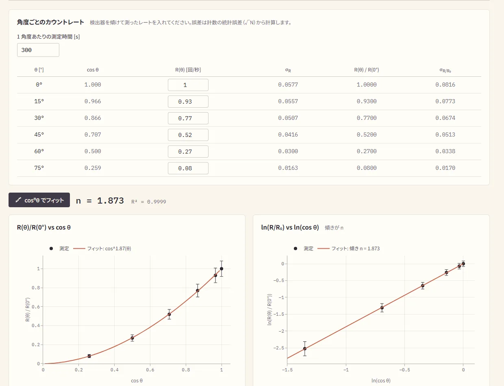
1 2 3- 11 角度あたりの測定時間 — 誤差（√N）の計算に使う
- 2R(θ) — 各角度のカウントレートを入れる。比と誤差は自動で出る
- 3cosⁿθ でフィット — n と R² が出て、グラフに線が引かれる
エネルギー校正
ADC の値をエネルギー（keV）に直すための式を、線源の既知のγ線から作ります。
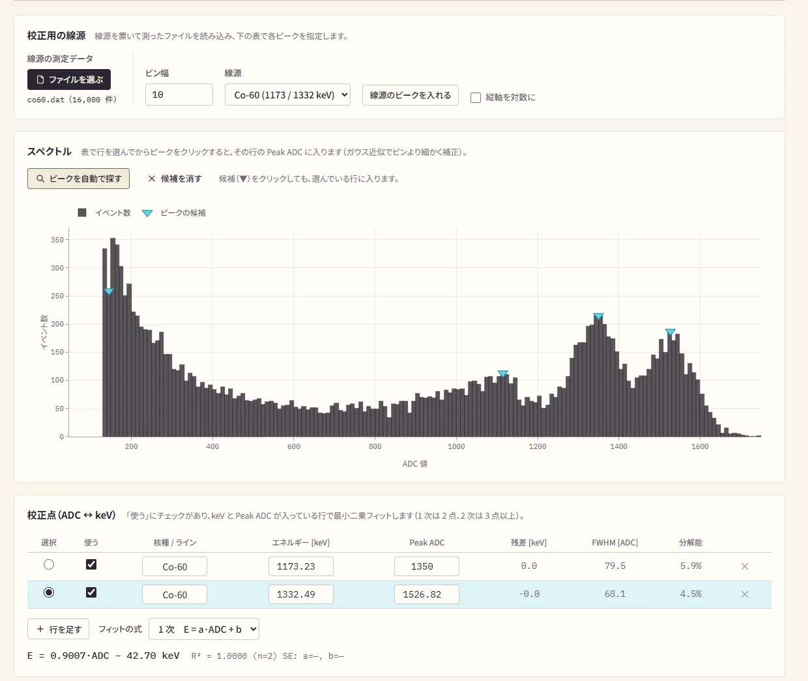
1 2 3 4 5 6 7- 1線源を置いて測ったファイルを読み込む
- 2線源を選んで 線源のピークを入れる — 表にγ線のエネルギーが入る
- 3ピークを自動で探す — 候補に ▼ が付く
- 4ピークをクリック — 選んでいる行の Peak ADC に入る（ガウス近似でビンより細かく）
- 5選択 — クリックで値を入れる行
- 6Peak ADC — 手で入れても良い。FWHM と分解能も出る
- 7校正の式と R² — 1 次は 2 点、2 次は 3 点以上で計算
校正はブラウザに自動で保存され、ADC ヒストグラムのタブで 横軸を keV に すると、ほかの測定データにも使えます。.json に書き出して、別のパソコンに持っていくこともできます。
11困ったとき
アプリ
USB / Bluetooth のボタンが押せない
- Chrome か Edge で開いているか確かめてください。理由はボタンの下に出ます。
- Bluetooth は
file://で開いたページでは使えません。http://localhostで開き直してください（02）。
「シリアルポートを開けませんでした」と出る
- ほかのアプリがポートを使っています。Arduino IDE のシリアルモニタや、このアプリを開いた別のタブを閉じてから、もう一度試してください。
Bluetooth の一覧に検出器が出ない
- 検出器の名前 が検出器の名前と同じか確かめてください（大文字・小文字も区別します）。
- 検出器の電源と距離、ほかのスマホやパソコンとつながっていないかを確かめてください。
「別の検出器につながりました」と出た
- 画面の計数率・経過時間・件数には前の検出器の分も入っています。測り直すときは データを消去して最初から を押してください。
サーバーに「接続できません」と出る
- ページを
https://で開いていないか確かめてください。http://localhostで開き直すのが確実です。 - サーバー URL の綴りとポート番号（ふつうは
3000）を確かめてください。 - サーバーで CORS が有効になっているか、管理者に確かめてください。
ログインはできるのに、送信でエラーになる / 「拒否」が増える
- 観測局 ID が自分のアカウントの ID と同じか確かめてください。他人の ID には送れません。
- 「拒否」が増えるときは、サーバーの検査で受け付けられていません。管理者に相談してください。
「未送信」が増え続ける
- 回線に対して計数率が高すぎます。送る量 を「10 件に 1 件」以下にしてください。自動保存は全件続きます。
検出器
受信ログに何も出ない / “Booting” が出ない
- Arduino IDE のボードが Arduino Nano ESP32、
USB CDC On Bootが Enabled になっているか確かめて、書き込み直してください。 - ボーレートを 9600 にしてください。
BOOTを押しながらRESETを押して書き込みモードにし、書き込み直してください。
イベントが 1 回も記録されない
- しきい値が高すぎるかもしれません。自動校正 をやり直してください。
- Digital / Dual のときは、Auto PWM をやり直してください。
- オシロスコープで信号が来ているか確かめてください。
カウントレートが異常に高い
- しきい値（Digital / Dual では PWM duty）が低すぎて、ノイズで反応しています。
- ピークホールドのリセット（D8）が効いていないかもしれません。配線を確かめてください。
- コンパレータの出力（D0）にノイズが乗っているかもしれません。グラウンドの配線を見直してください。
温度・湿度・気圧が「--」のまま
- BME280 が見つかっていません。I²C アドレス（0x76 / 0x77）と配線（SDA = A4、SCL = A5）を確かめてください。
- BMP280（温度と気圧だけ）では湿度は出ません。
OLED が真っ暗
- 詳細設定 > 検出器の機能 で OLED がオンか確かめてください。
- I²C の配線と電源（3.3 V / GND）、OLED のアドレス（0x3C、まれに 0x3D）を確かめてください。
外部検出器の Dig1〜3 がずっと 0（または 1）
- 外部検出器の読み取り がオンか確かめてください。
- 外部検出器の出力の電圧（3.3 V / 5 V）と、プルアップ・プルダウンの要否を回路図で確かめてください。
12用語集
- SiPM
- Silicon Photomultiplier（シリコン光電子増倍管）。シンチレーターが出す弱い光を電気の信号に変える素子。
- ADC
- 信号の大きさを数にしたもの。この検出器では 0〜4095（12 ビット）。大きいほどエネルギーが大きい。
- ピークホールド
- パルスのいちばん高い電圧をしばらく保つ回路。マイコンが落ち着いて読めるようにするため。
- コンパレータ
- 信号がしきい値を超えたかどうかを回路で判定する部品。しきい値は PWM の duty で作る。
- Duty
- PWM の信号が HIGH になっている時間の割合。0〜255 で表す。平均電圧 ≈ duty × 電源電圧 ÷ 255。
- デッドタイム
- 1 イベントを処理している間など、次の信号を数えられない時間。
- ライブタイム
- 経過時間からデッドタイムを引いた、実際に数えていた時間。カウントレートはこれで割る。
- コインシデンス
- 複数の検出器がほぼ同時（µs 程度）に反応すること。貫いて通る粒子（ミューオンなど）だと確かめるのに使う。
- BLE / NUS
- Bluetooth Low Energy / Nordic UART Service。無線でシリアル通信のようにやりとりする仕組み。
付録 Aファイルとログの形式
検出器が送る行
イベントのたびに、USB と Bluetooth の両方へ 1 行ずつ送られます。空白区切りです。microSD のログも同じ形です。
### Event Time[us] ADC[0-4095] Deadtime[us] Temp[C] Hum[%] Press[hPa] Dig1 Dig2 Dig3 Ana1 Ana2 Ana3
42 18732450 1940 1203000 24.3 48.2 1013.2 1 0 1 2448 112 2804| 列 | 意味 | 範囲・単位 |
|---|---|---|
| Event | イベントの通し番号 | 1, 2, 3, … |
| Time[us] | 起動（または RESET）からの時間 | µs |
| ADC | この検出器のピークホールドの値 | 0〜4095 |
| Deadtime[us] | デッドタイムの累計 | µs |
| Temp[C] / Hum[%] / Press[hPa] | BME280 の温度・湿度・気圧（2 秒ごとに更新） | °C / %RH / hPa |
| v2Dig1〜3 | 外部検出器 1〜3 のデジタル値 | 0 / 1 |
| v2Ana1〜3 | 外部検出器 1〜3 のアナログ値 | 0〜4095 |
このアプリが保存するファイル
上の列の 2 列目に PC_Timestamp（このパソコンの時計、UTC、末尾 Z）を足した形です。そのため 3 列目以降は、検出器の行より 1 つ右にずれます。.dat はタブ区切り、.csv はカンマ区切りです。
# 屋上・水平・晴れ ← メモ
# Source: CosmicRay Recorder v2
# Device: CosmicRay
# Trigger mode: ANALOG
# Signal threshold: 120 / 4095
# Event PC_Timestamp Time[us] ADC[0-4095] Deadtime[us] Temp[C] Hum[%] Press[hPa] Dig1 Dig2 Dig3 Ana1 Ana2 Ana3
1 2026-10-07T03:12:45.118Z 18732450 1940 1203000 24.3 48.2 1013.2 1 0 1 2448 112 2804# で始まる行はメモと見出しです。Python の pandas なら read_csv(path, sep='\t', comment='#')（.csv は sep なし）で読めます。
付録 Bコマンド一覧
このアプリのボタンは、内部で次のコマンドを検出器に送っています。シリアル（9600 bps）か BLE の RX に書き込むと、手で送ることもできます。改行（LF か CR）で確定します。設定は検出器の Preferences に保存され、次の起動でも残ります。
しきい値・トリガー
今の信号しきい値と PWM duty を THRESH:<sig> DUTY:<duty> で返します。
Analog / Dual で使う信号しきい値を 0〜4095 で設定します。例: SET_THRESH:1200。
v1 の 2 つの引数（SET_THRESH:sig,rst）はなくなりました。リセットのしきい値は回路が受け持ちます。
A0 のノイズを 100 回（約 1 秒）測り、最大値 ＋ マージン を信号しきい値にします。光が入らない状態で実行してください。
AUTO_THRESH— 今のマージン（初期値 50）で校正します。AUTO_THRESH:<margin>— マージンを変えてから校正します（例:AUTO_THRESH:60）。
自動校正のマージンを読む / 設定します。応答は AUTO_MARGIN:<n>。
トリガーモードを読む / 設定します。応答は MODE:ANALOG など。
コンパレータのしきい値（PWM）
Digital / Dual で使うコンパレータのしきい値（D2 の PWM duty）を読む / 設定します。応答は PWM:<duty>。
duty を掃引して、ノイズの反応が目標（回/秒）以下になる点に合わせ、終わると PWM:<duty> を返します。Digital / Dual を使う前に一度実行してください。
コンパレータのしきい値は SET_THRESH とは別に設定します（以前の ×2 の換算はなくなりました）。
オシロスコープ
波形を送るモードを切り替えます。応答は SCOPE:ON / SCOPE:OFF。ON の間は計数が止まり、その時間はデッドタイムに入ります。波形は WF,… で始まる行で届きます。
1 秒に送る波形の数の上限（1〜20、初期値 3）を読む / 設定します。応答は SCOPE_RATE:<n>。
ブザー
イベントごとの音を読む / 設定します。応答は BEEP:<min>,<max>,<ms>（初期値 500,4000,25）。信号の大きさを対数で音の高さにし、しきい値ちょうどで min_hz、ADC 最大で max_hz になります。
範囲: min ≥ 50、min < max ≤ 20000、ms は 1〜500。音は待たずに鳴らすので、デッドタイムは増えません。
最低・中間・最高の音を順に鳴らします。
振動モーター
振動の長さを読む / 設定します。応答は VIBMS:<min>,<max>（初期値 20,120）。信号が大きいほど長く振動します。範囲: min ≥ 1、min < max ≤ 500。止めるのは loop() 側なので、デッドタイムは増えません。
最短・中間・最長で順に振動させます。待っている間は計数が止まりますが、その時間はデッドタイムに入るので計数率は狂いません。
機能のオン / オフ
microSD・外部検出器・OLED・ブザー・振動をオン / オフします（初期値はすべて ON）。読むときは GET_SD などで、応答は SD:ON、BUZZER:OFF の形です。
システム
Bluetooth の名前を読む / 変えます。応答は BLENAME:<name>。再起動すると反映されます。このアプリは 19 文字までに制限しています。
基板の Bluetooth アドレスを BTADDR:aa:bb:cc:dd:ee:ff で返します。USB でつないでいても使えます。
イベント番号とデッドタイムを 0 に戻します。応答は RESET:OK。
Bluetooth（Nordic UART Service）
| UUID | 用途 |
|---|---|
6E400001-B5A3-F393-E0A9-E50E24DCCA9E | サービス |
6E400002-… | RX（パソコン → 検出器、Write） |
6E400003-… | TX（検出器 → パソコン、Notify） |
検出器は 20 バイトずつに分けて送り、受け取る側で 1 行につなぎ直します。このアプリのほか、スマホの汎用 BLE ターミナル（iOS: Bluefruit Connect、Android: Serial Bluetooth Terminal / nRF Connect）でも、UART モードで行を見たりコマンドを送ったりできます。
付録 Cハードウェアとピン
v1 からの主な変更
| 項目 | v1 | v2 |
|---|---|---|
| トリガー | ADC を読み続けてしきい値と比べる | 外部コンパレータ ＋ 割り込みも使える。しきい値は D2 の PWM duty |
| ピークホールド | 信号が下がるまで待つ | D8 のパルスで強制的にリセット |
| 温度センサ | NTC サーミスタ（A3） | BME280（I²C）で温度・湿度・気圧 |
| コインシデンス | Master / Slave の 2 台 | 外部検出器 3 台を同時に入力（DIG_IN1〜3 / ANA_IN1〜3） |
| 出力 | LED のみ | ブザー、音声ジャック（COIN_OUT、ANA_OUT）、振動モーター |
| ログ | Mode 列（Master / Slave） | 湿度・気圧と Dig1〜3 / Ana1〜3 の列。時間は µs |
Nano ESP32 のピン
| Nano ピン | ラベル | ネット名 | 方向 | 用途 |
|---|---|---|---|---|
| 1 | D1 / TX | (Buzzer) | OUT | ブザー |
| 2 | D0 / RX | Trigger | IN (INT) | コンパレータの出力 → 割り込み |
| 5 | D2 | PWM | OUT | コンパレータのしきい値（duty） |
| 7 | D4 | DIG_IN3 | IN | 外部検出器 3（デジタル） |
| 8 | D5 | DIG_IN2 | IN | 外部検出器 2（デジタル） |
| 9 | D6 | DIG_IN1 | IN | 外部検出器 1（デジタル） |
| 10 | D7 | COIN_OUT | OUT | 音声ジャックのデジタル出力 |
| 11 | D8 | TriggerReset | OUT | ピークホールドのリセットパルス |
| 12〜16 | D9〜D13 | SPI | — | microSD（CS / MOSI / MISO / SCK） |
| 19 | A0 | ANA_OUT | IN (ADC) | この検出器のピークホールドの値 |
| 20 | A1 | ANA_IN1 | IN (ADC) | 外部検出器 1（アナログ） |
| 21 | A2 | ANA_IN2 | IN (ADC) | 外部検出器 2（アナログ） |
| 23 | A4 | SDA | I²C | OLED ＋ BME280 |
| 24 | A5 | SCL | I²C | OLED ＋ BME280 |
| 25 | A6 | ANA_IN3 | IN (ADC) | 外部検出器 3（アナログ） |
| 26 | A7 | (Vibration) | OUT | 振動モーター（基板では空き。後付け） |
「ANA_OUT」はアナログ回路（ピークホールド）からの出力という意味で、音声ジャックとマイコンの A0 に同じ信号がつながっています。マイコンはこの電圧を読むだけです。
信号の流れ
振動モーターの配線
振動モーターは A7（GPIO14）で動かします。D13 は使えません（microSD の SCK と共用で、SD のログが壊れます）。コイン型（10 × 2.7 mm）は 75〜90 mA ほど流れ、起動時はさらに大きく、ESP32-S3 の GPIO の絶対最大定格 40 mA を超えます。A7 → 1 kΩ → NPN トランジスタ（2N3904 / S8050）か N-ch MOSFET（2N7002）で駆動し、モーターと並列に還流ダイオード（1N4148）、端子間に 0.1 µF を入れてください。モーターのノイズは SiPM の誤トリガーの原因にもなります。
付録 Dファームウェアの書き込み
用意するもの
- Arduino IDE 2.x（または PlatformIO）
- ESP32 Arduino Core（ボードマネージャで
esp32by Espressif Systems） - USB Type-C ケーブル
ライブラリ
| ライブラリ | 用途 |
|---|---|
| Adafruit SSD1306 | OLED |
| Adafruit GFX Library | 描画の土台 |
| v2Adafruit BME280 Library | 温度・湿度・気圧 |
| v2Adafruit Unified Sensor | BME280 が使う |
BLE と Preferences は ESP32 Arduino Core に入っているので、別に入れる必要はありません。
書き込みの手順
v2/COSMICRAY_DETECTOR_ESP32-S3-Nano-v2/COSMICRAY_DETECTOR_ESP32-S3-Nano-v2.inoを Arduino IDE で開きます。- ツール > ボード で Arduino Nano ESP32 を選び、
USB CDC On Bootを Enabled にします。 - ポートを選びます（Windows は
COMxx、Mac は/dev/cu.usbmodem…）。 - ✓（検証）でコンパイルし、→（書き込み）で書き込みます。
- シリアルモニタ（9600 baud）に
Booting v2...と出れば完了です。
基板の BOOT を押しながら RESET を一瞬押すと書き込みモードになります。そのあと IDE から書き込んでください。書き込み中はこのアプリを閉じておいてください（ポートを取り合います）。
起動の流れ
- 電源を入れると
Booting v2...を送ります。 - 保存してある設定を読みます（初めてのときは自動校正）。
- Bluetooth の広告を始めます（名前は最初
CosmicRay）。 - OLED にオープニング画面を出します。
- BME280 を探します（0x76 → 0x77）。
- 計測を始めます。
OLED の表示
Accel Kitchen v2 Cnt:123 T:00:05:42 Rate: 0.41+/-0.04 Thr:30 Duty:7 Temp:24.3C
Cnt は累計のイベント数、T は経過時間、Rate は平均レートと統計誤差、Thr / Duty は信号しきい値と PWM duty、Temp は温度です。